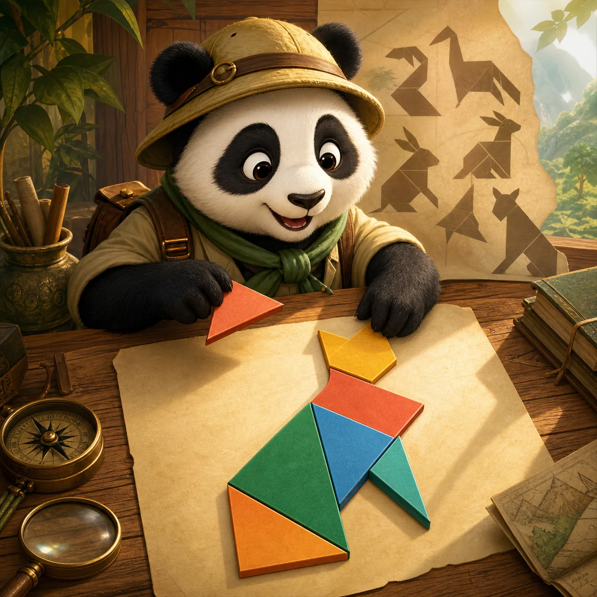

PANKO'S SHAPE TRAIL
Panko's Tangram Trail
Move and rotate seven pieces until every shape rests in its animal outline.
How to play
Drag a piece into its faint outline. Tap a piece to turn it 45 degrees. Every piece must be snug and upright.